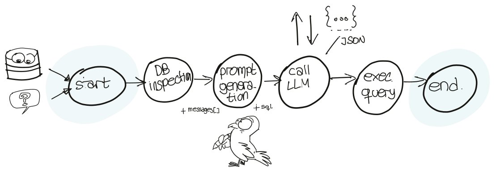
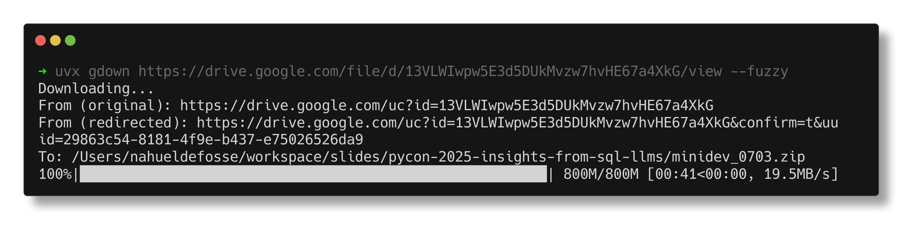
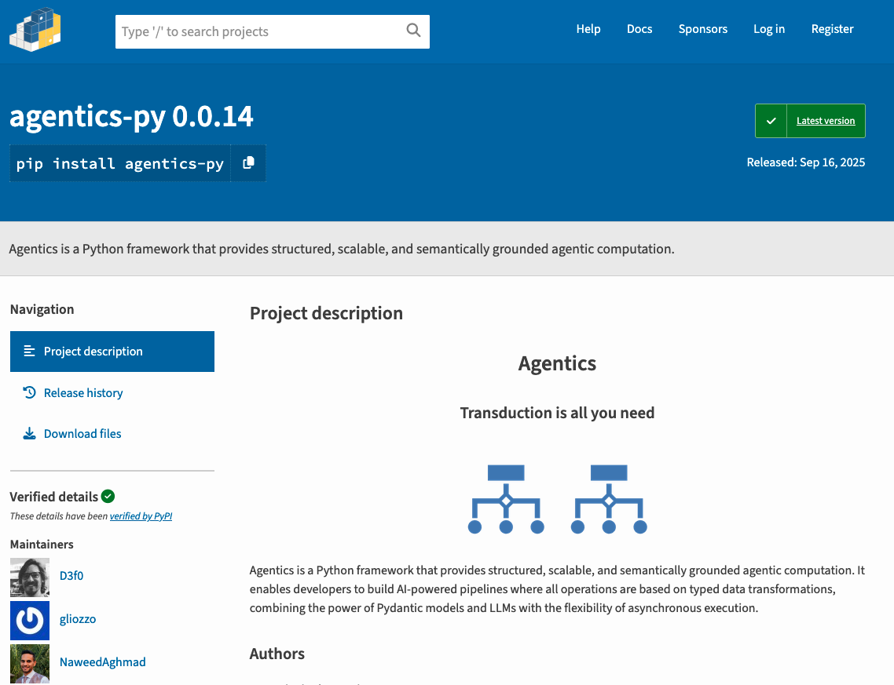

from datasets import load_dataset, DownloadConfig
# Load the dataset
dataset = load_dataset(
"birdsql/bird_mini_dev",
download_config=DownloadConfig(disable_tqdm=True)
)
# Only SQLite (there's Postgres and MySQL in the same dataset)
sqlite_df = (dataset["mini_dev_sqlite"]
.to_pandas()
.pipe(lambda df: df.drop(columns=['question_id'])))
display(sqlite_df.sample(5, random_state=17))💬 🤖 Asking questions to your database with LLMs
Nahuel Defossé nahuel.defosse@ibm.com
IBM Research Africa
IBM Research Africa
About myself

- 🐍 Pythonista with 18 years of experience 🇦🇷 🧉
- Co-organized SciPy Latin America
- PyCon Argentina and EuroPython speaker
- 🚜 Worked as CTO in Hello Tractor
- 🧪 Software Engineer at IBM Research
- 🛰️ Worked in Foundational Models for Geospatial applications
- 💬 Currently working on Flowpilot , providing core features to different products and divisions
Tomorrow

Learn about Multimodal Geospatial Foundation Models with Terratorch by Wanjiru, Beldine and Reggie
Follow along (or at 🏡)
Get the code
Agenda
In this talk we’re gonna show how to use Python to:
- Connect to a database and execute the queries
- Convert natural language questions into SQL
- Create a workflow
- Managing configuration
- Lessons learned
Pipeline Overview
DB Inspection
Public datasets used in text to SQL
These datasets define:
- ❓ Natural language questions
- 🤞🏽 Expected SQL
- 🏗️ Database schema & content
- 🔎 Evaluation metrics
- 🥇 Leaderboard
BIRD
BIRD mini-dev
| db_id | question | evidence | SQL | difficulty | |
|---|---|---|---|---|---|
| 190 | formula_1 | For the constructor which got the highest poin... | race number refers to raceId; constructor whic... | SELECT T2.url FROM constructorResults AS T1 IN... | moderate |
| 267 | superhero | In superheroes with height between 150 to 180,... | height between 150 to 180 refers to height_cm ... | SELECT CAST(COUNT(CASE WHEN T2.publisher_name ... | challenging |
| 457 | california_schools | What is the monthly average number of schools ... | Elementary School District refers to DOC = 52;... | SELECT CAST(COUNT(School) AS REAL) / 12 FROM s... | moderate |
| 263 | superhero | What is the average weight of all female super... | female refers to gender = 'Female'; average we... | SELECT AVG(T1.weight_kg) FROM superhero AS T1 ... | simple |
| 159 | european_football_2 | When was the first time did Kevin Constant hav... | Kevin Constant refers to player_name = 'Kevin ... | SELECT `date` FROM ( SELECT t2.crossing, t2.`d... | moderate |
Downloading BIRD databases

Extracting the archive (3.3GiB)
The dataset doesn’t contain the SQL flies, these are shared separately as zipfiles. In this case it’s located in Google Drive.
Picking the example database california_schools
In minidev/MINIDEV/dev_databases/california_schools/ we find the
ER of california_schools
{kind=link}
Creating the Engine
Creating an Engine instance connected to a SQLite database to run our queries.
Getting one simple question
simple_queries_df = (sqlite_df
.pipe(lambda df: df[df.db_id == 'california_schools'])
.pipe(lambda df: df[df.difficulty == 'simple']))
simple_queries_df.head(2).set_index("db_id")| question | evidence | SQL | difficulty | |
|---|---|---|---|---|
| db_id | ||||
| california_schools | How many schools with an average score in Math... | Exclusively virtual refers to Virtual = 'F' | SELECT COUNT(DISTINCT T2.School) FROM satscore... | simple |
| california_schools | Please list the codes of the schools with a to... | Total enrollment can be represented by `Enroll... | SELECT T2.CDSCode FROM schools AS T1 INNER JOI... | simple |
Getting a simple question and query
Let’s take a look at the question and SQL column
'How many schools with an average score in Math greater than 400 in the SAT test are exclusively virtual?'"SELECT COUNT(DISTINCT T2.School) FROM satscores AS T1 INNER JOIN schools AS T2 ON T1.cds = T2.CDSCode WHERE T2.Virtual = 'F' AND T1.AvgScrMath > 400"Execute the query
Now we run the SQL column captured in the variable query through SQLAlchemy and plot the results as a DataFrame
| COUNT(DISTINCT T2.School) | |
|---|---|
| 0 | 4 |
Convert natural language questions into SQL
Coding models
Pretrained LLMs are quite capable of writing functional SQL queries, finetuned ones show better performance for specific SQL dialects.
For example, some IBM trained models include:
- granite-3-2-8b-instruct
- granite-34b-code-instruct
- granite-20b-code-base-sql-gen
Prompts for SQL generation
LLMs don’t know the 🏗️ structure of our database, and may hallucinate about it, or create some flat out invalid SQL
We have to provide extra information about the structure in the instructions
For this we will use a prompt string with some placeholders .
Some research papers from our team on Robust LLMs:
Getting the schema for the prompt
LangChain (🦜 ⛓️) community 🐍 📦 provides a simple class that can retrieve some schema information SQL Question Answering
It implements the best practices as specified in: Rajkumar et al, 2022
CREATE TABLE frpm ( "CDSCode" TEXT NOT NULL, "Academic Year" TEXT, "County Code" TEXT, "District Code" INTEGER, "School Code" TEXT, "County Name" TEXT, "District Name" TEXT, "School Name" TEXT, "District Type" TEXT, "School Type" TEXT, "Educational Option Type" TEXT, "NSLP Provision Status" TEXT, "Charter School (Y/N)" INTEGER, "Charter School Number" TEXT, "Charter Funding Type" TEXT, "IRC" INTEGER, "Low Grade" TEXT, "High Grade" TEXT, "Enrollment (K-12)" REAL, "Free Meal Count (K-12)" REAL, "Percent (%) Eligible Free (K-12)" REAL, "FRPM Count (K-12)" REAL, "Percent (%) Eligible FRPM (K-12)" REAL, "Enrollment (Ages 5-17)" REAL, "Free Meal Count (Ages 5-17)" REAL, "Percent (%) Eligible Free (Ages 5-17)" REAL, "FRPM Count (Ages 5-17)" REAL, "Percent (%) Eligible FRPM (Ages 5-17)" REAL, "2013-14 CALPADS Fall 1 Certification Status" INTEGER, PRIMARY KEY ("CDSCode"), FOREIGN KEY("CDSCode") REFERENCES schools ("CDSCode") ) /* 3 rows from frpm table: CDSCode Academic Year County Code District Code School Code County Name District Name School Name District Type School Type Educational Option Type NSLP Provision Status Charter School (Y/N) Charter School Number Charter Funding Type IRC Low Grade High Grade Enrollment (K-12) Free Meal Count (K-12) Percent (%) Eligible Free (K-12) FRPM Count (K-12) Percent (%) Eligible FRPM (K-12) Enrollment (Ages 5-17) Free Meal Count (Ages 5-17) Percent (%) Eligible Free (Ages 5-17) FRPM Count (Ages 5-17) Percent (%) Eligible FRPM (Ages 5-17) 2013-14 CALPADS Fall 1 Certification Status 01100170109835 2014-2015 01 10017 0109835 Alameda Alameda County Office of Education FAME Public Charter County Office of Education (COE) K-12 Schools (Public) Traditional None 1 0728 Directly funded 1 K 12 1087.0 565.0 0.519779208831647 715.0 0.657773689052438 1070.0 553.0 0.516822429906542 702.0 0.65607476635514 1 01100170112607 2014-2015 01 10017 0112607 Alameda Alameda County Office of Education Envision Academy for Arts & Technology County Office of Education (COE) High Schools (Public) Traditional None 1 0811 Directly funded 1 9 12 395.0 186.0 0.470886075949367 186.0 0.470886075949367 376.0 182.0 0.484042553191489 182.0 0.484042553191489 1 01100170118489 2014-2015 01 10017 0118489 Alameda Alameda County Office of Education Aspire California College Preparatory Academy County Office of Education (COE) High Schools (Public) Traditional None 1 1049 Directly funded 1 9 12 244.0 134.0 0.549180327868853 175.0 0.717213114754098 230.0 128.0 0.556521739130435 168.0 0.730434782608696 1 */ CREATE TABLE satscores ( cds TEXT NOT NULL, rtype TEXT NOT NULL, sname TEXT, dname TEXT, cname TEXT, enroll12 INTEGER NOT NULL, "NumTstTakr" INTEGER NOT NULL, "AvgScrRead" INTEGER, "AvgScrMath" INTEGER, "AvgScrWrite" INTEGER, "NumGE1500" INTEGER, PRIMARY KEY (cds), FOREIGN KEY(cds) REFERENCES schools ("CDSCode") ) /* 3 rows from satscores table: cds rtype sname dname cname enroll12 NumTstTakr AvgScrRead AvgScrMath AvgScrWrite NumGE1500 01100170000000 D None Alameda County Office of Education Alameda 398 88 418 418 417 14 01100170109835 S FAME Public Charter Alameda County Office of Education Alameda 62 17 503 546 505 9 01100170112607 S Envision Academy for Arts & Technology Alameda County Office of Education Alameda 75 71 397 387 395 5 */ CREATE TABLE schools ( "CDSCode" TEXT NOT NULL, "NCESDist" TEXT, "NCESSchool" TEXT, "StatusType" TEXT NOT NULL, "County" TEXT NOT NULL, "District" TEXT NOT NULL, "School" TEXT, "Street" TEXT, "StreetAbr" TEXT, "City" TEXT, "Zip" TEXT, "State" TEXT, "MailStreet" TEXT, "MailStrAbr" TEXT, "MailCity" TEXT, "MailZip" TEXT, "MailState" TEXT, "Phone" TEXT, "Ext" TEXT, "Website" TEXT, "OpenDate" DATE, "ClosedDate" DATE, "Charter" INTEGER, "CharterNum" TEXT, "FundingType" TEXT, "DOC" TEXT NOT NULL, "DOCType" TEXT NOT NULL, "SOC" TEXT, "SOCType" TEXT, "EdOpsCode" TEXT, "EdOpsName" TEXT, "EILCode" TEXT, "EILName" TEXT, "GSoffered" TEXT, "GSserved" TEXT, "Virtual" TEXT, "Magnet" INTEGER, "Latitude" REAL, "Longitude" REAL, "AdmFName1" TEXT, "AdmLName1" TEXT, "AdmEmail1" TEXT, "AdmFName2" TEXT, "AdmLName2" TEXT, "AdmEmail2" TEXT, "AdmFName3" TEXT, "AdmLName3" TEXT, "AdmEmail3" TEXT, "LastUpdate" DATE NOT NULL, PRIMARY KEY ("CDSCode") ) /* 3 rows from schools table: CDSCode NCESDist NCESSchool StatusType County District School Street StreetAbr City Zip State MailStreet MailStrAbr MailCity MailZip MailState Phone Ext Website OpenDate ClosedDate Charter CharterNum FundingType DOC DOCType SOC SOCType EdOpsCode EdOpsName EILCode EILName GSoffered GSserved Virtual Magnet Latitude Longitude AdmFName1 AdmLName1 AdmEmail1 AdmFName2 AdmLName2 AdmEmail2 AdmFName3 AdmLName3 AdmEmail3 LastUpdate 01100170000000 0691051 None Active Alameda Alameda County Office of Education None 313 West Winton Avenue 313 West Winton Ave. Hayward 94544-1136 CA 313 West Winton Avenue 313 West Winton Ave. Hayward 94544-1136 CA (510) 887-0152 None www.acoe.org None None None None None 00 County Office of Education (COE) None None None None None None None None None None 37.658212 -122.09713 L Karen Monroe lkmonroe@acoe.org None None None None None None 2015-06-23 01100170109835 0691051 10546 Closed Alameda Alameda County Office of Education FAME Public Charter 39899 Balentine Drive, Suite 335 39899 Balentine Dr., Ste. 335 Newark 94560-5359 CA 39899 Balentine Drive, Suite 335 39899 Balentine Dr., Ste. 335 Newark 94560-5359 CA None None None 2005-08-29 2015-07-31 1 0728 Directly funded 00 County Office of Education (COE) 65 K-12 Schools (Public) TRAD Traditional ELEMHIGH Elementary-High Combination K-12 K-12 P 0 37.521436 -121.99391 None None None None None None None None None 2015-09-01 01100170112607 0691051 10947 Active Alameda Alameda County Office of Education Envision Academy for Arts & Technology 1515 Webster Street 1515 Webster St. Oakland 94612-3355 CA 1515 Webster Street 1515 Webster St. Oakland 94612 CA (510) 596-8901 None www.envisionacademy.org/ 2006-08-28 None 1 0811 Directly funded 00 County Office of Education (COE) 66 High Schools (Public) TRAD Traditional HS High School 9-12 9-12 N 0 37.80452 -122.26815 Laura Robell laura@envisionacademy.org None None None None None None 2015-06-18 */
Prompts
system_message = """
Given an input question, create a syntactically correct {dialect} query to
run to help find the answer. Unless the user specifies in his question a
specific number of examples they wish to obtain, always limit your query to
at most {top_k} results. You can order the results by a relevant column to
return the most interesting examples in the database.
Never query for all the columns from a specific table, only ask for a the
few relevant columns given the question.
Pay attention to use only the column names that you can see in the schema
description. Be careful to not query for columns that do not exist. Also,
pay attention to which column is in which table.
Only use the following tables:
{table_info}
"""The messages that constitute the prompt
Now we construct a list of messages. These are dicts which have a key user or system, and a content.
def generate_messages(question, dialect="SQL", top_k=5, table_info=""):
# Create a ChatPromptTemplate
messages = [
{
"role": "system",
"content": system_message.format(
dialect=dialect,
top_k=top_k,
table_info=table_info
)},
{
"role": "user",
"content": question
}
]
return messages
messages = generate_messages(
question=question,
dialect=db.dialect, top_k=10,
table_info=db.get_table_info())
messagesThe messages that constitute the prompt
[{'role': 'system',
'content': '\nGiven an input question, create a syntactically correct sqlite query to\nrun to help find the answer. Unless the user specifies in his question a\nspecific number of examples they wish to obtain, always limit your query to\nat most 10 results. You can order the results by a relevant column to\nreturn the most interesting examples in the database.\n\nNever query for all the columns from a specific table, only ask for a the\nfew relevant columns given the question.\n\nPay attention to use only the column names that you can see in the schema\ndescription. Be careful to not query for columns that do not exist. Also,\npay attention to which column is in which table.\n\nOnly use the following tables:\n\nCREATE TABLE frpm (\n\t"CDSCode" TEXT NOT NULL, \n\t"Academic Year" TEXT, \n\t"County Code" TEXT, \n\t"District Code" INTEGER, \n\t"School Code" TEXT, \n\t"County Name" TEXT, \n\t"District Name" TEXT, \n\t"School Name" TEXT, \n\t"District Type" TEXT, \n\t"School Type" TEXT, \n\t"Educational Option Type" TEXT, \n\t"NSLP Provision Status" TEXT, \n\t"Charter School (Y/N)" INTEGER, \n\t"Charter School Number" TEXT, \n\t"Charter Funding Type" TEXT, \n\t"IRC" INTEGER, \n\t"Low Grade" TEXT, \n\t"High Grade" TEXT, \n\t"Enrollment (K-12)" REAL, \n\t"Free Meal Count (K-12)" REAL, \n\t"Percent (%) Eligible Free (K-12)" REAL, \n\t"FRPM Count (K-12)" REAL, \n\t"Percent (%) Eligible FRPM (K-12)" REAL, \n\t"Enrollment (Ages 5-17)" REAL, \n\t"Free Meal Count (Ages 5-17)" REAL, \n\t"Percent (%) Eligible Free (Ages 5-17)" REAL, \n\t"FRPM Count (Ages 5-17)" REAL, \n\t"Percent (%) Eligible FRPM (Ages 5-17)" REAL, \n\t"2013-14 CALPADS Fall 1 Certification Status" INTEGER, \n\tPRIMARY KEY ("CDSCode"), \n\tFOREIGN KEY("CDSCode") REFERENCES schools ("CDSCode")\n)\n\n/*\n3 rows from frpm table:\nCDSCode\tAcademic Year\tCounty Code\tDistrict Code\tSchool Code\tCounty Name\tDistrict Name\tSchool Name\tDistrict Type\tSchool Type\tEducational Option Type\tNSLP Provision Status\tCharter School (Y/N)\tCharter School Number\tCharter Funding Type\tIRC\tLow Grade\tHigh Grade\tEnrollment (K-12)\tFree Meal Count (K-12)\tPercent (%) Eligible Free (K-12)\tFRPM Count (K-12)\tPercent (%) Eligible FRPM (K-12)\tEnrollment (Ages 5-17)\tFree Meal Count (Ages 5-17)\tPercent (%) Eligible Free (Ages 5-17)\tFRPM Count (Ages 5-17)\tPercent (%) Eligible FRPM (Ages 5-17)\t2013-14 CALPADS Fall 1 Certification Status\n01100170109835\t2014-2015\t01\t10017\t0109835\tAlameda\tAlameda County Office of Education\tFAME Public Charter\tCounty Office of Education (COE)\tK-12 Schools (Public)\tTraditional\tNone\t1\t0728\tDirectly funded\t1\tK\t12\t1087.0\t565.0\t0.519779208831647\t715.0\t0.657773689052438\t1070.0\t553.0\t0.516822429906542\t702.0\t0.65607476635514\t1\n01100170112607\t2014-2015\t01\t10017\t0112607\tAlameda\tAlameda County Office of Education\tEnvision Academy for Arts & Technology\tCounty Office of Education (COE)\tHigh Schools (Public)\tTraditional\tNone\t1\t0811\tDirectly funded\t1\t9\t12\t395.0\t186.0\t0.470886075949367\t186.0\t0.470886075949367\t376.0\t182.0\t0.484042553191489\t182.0\t0.484042553191489\t1\n01100170118489\t2014-2015\t01\t10017\t0118489\tAlameda\tAlameda County Office of Education\tAspire California College Preparatory Academy\tCounty Office of Education (COE)\tHigh Schools (Public)\tTraditional\tNone\t1\t1049\tDirectly funded\t1\t9\t12\t244.0\t134.0\t0.549180327868853\t175.0\t0.717213114754098\t230.0\t128.0\t0.556521739130435\t168.0\t0.730434782608696\t1\n*/\n\n\nCREATE TABLE satscores (\n\tcds TEXT NOT NULL, \n\trtype TEXT NOT NULL, \n\tsname TEXT, \n\tdname TEXT, \n\tcname TEXT, \n\tenroll12 INTEGER NOT NULL, \n\t"NumTstTakr" INTEGER NOT NULL, \n\t"AvgScrRead" INTEGER, \n\t"AvgScrMath" INTEGER, \n\t"AvgScrWrite" INTEGER, \n\t"NumGE1500" INTEGER, \n\tPRIMARY KEY (cds), \n\tFOREIGN KEY(cds) REFERENCES schools ("CDSCode")\n)\n\n/*\n3 rows from satscores table:\ncds\trtype\tsname\tdname\tcname\tenroll12\tNumTstTakr\tAvgScrRead\tAvgScrMath\tAvgScrWrite\tNumGE1500\n01100170000000\tD\tNone\tAlameda County Office of Education\tAlameda\t398\t88\t418\t418\t417\t14\n01100170109835\tS\tFAME Public Charter\tAlameda County Office of Education\tAlameda\t62\t17\t503\t546\t505\t9\n01100170112607\tS\tEnvision Academy for Arts & Technology\tAlameda County Office of Education\tAlameda\t75\t71\t397\t387\t395\t5\n*/\n\n\nCREATE TABLE schools (\n\t"CDSCode" TEXT NOT NULL, \n\t"NCESDist" TEXT, \n\t"NCESSchool" TEXT, \n\t"StatusType" TEXT NOT NULL, \n\t"County" TEXT NOT NULL, \n\t"District" TEXT NOT NULL, \n\t"School" TEXT, \n\t"Street" TEXT, \n\t"StreetAbr" TEXT, \n\t"City" TEXT, \n\t"Zip" TEXT, \n\t"State" TEXT, \n\t"MailStreet" TEXT, \n\t"MailStrAbr" TEXT, \n\t"MailCity" TEXT, \n\t"MailZip" TEXT, \n\t"MailState" TEXT, \n\t"Phone" TEXT, \n\t"Ext" TEXT, \n\t"Website" TEXT, \n\t"OpenDate" DATE, \n\t"ClosedDate" DATE, \n\t"Charter" INTEGER, \n\t"CharterNum" TEXT, \n\t"FundingType" TEXT, \n\t"DOC" TEXT NOT NULL, \n\t"DOCType" TEXT NOT NULL, \n\t"SOC" TEXT, \n\t"SOCType" TEXT, \n\t"EdOpsCode" TEXT, \n\t"EdOpsName" TEXT, \n\t"EILCode" TEXT, \n\t"EILName" TEXT, \n\t"GSoffered" TEXT, \n\t"GSserved" TEXT, \n\t"Virtual" TEXT, \n\t"Magnet" INTEGER, \n\t"Latitude" REAL, \n\t"Longitude" REAL, \n\t"AdmFName1" TEXT, \n\t"AdmLName1" TEXT, \n\t"AdmEmail1" TEXT, \n\t"AdmFName2" TEXT, \n\t"AdmLName2" TEXT, \n\t"AdmEmail2" TEXT, \n\t"AdmFName3" TEXT, \n\t"AdmLName3" TEXT, \n\t"AdmEmail3" TEXT, \n\t"LastUpdate" DATE NOT NULL, \n\tPRIMARY KEY ("CDSCode")\n)\n\n/*\n3 rows from schools table:\nCDSCode\tNCESDist\tNCESSchool\tStatusType\tCounty\tDistrict\tSchool\tStreet\tStreetAbr\tCity\tZip\tState\tMailStreet\tMailStrAbr\tMailCity\tMailZip\tMailState\tPhone\tExt\tWebsite\tOpenDate\tClosedDate\tCharter\tCharterNum\tFundingType\tDOC\tDOCType\tSOC\tSOCType\tEdOpsCode\tEdOpsName\tEILCode\tEILName\tGSoffered\tGSserved\tVirtual\tMagnet\tLatitude\tLongitude\tAdmFName1\tAdmLName1\tAdmEmail1\tAdmFName2\tAdmLName2\tAdmEmail2\tAdmFName3\tAdmLName3\tAdmEmail3\tLastUpdate\n01100170000000\t0691051\tNone\tActive\tAlameda\tAlameda County Office of Education\tNone\t313 West Winton Avenue\t313 West Winton Ave.\tHayward\t94544-1136\tCA\t313 West Winton Avenue\t313 West Winton Ave.\tHayward\t94544-1136\tCA\t(510) 887-0152\tNone\twww.acoe.org\tNone\tNone\tNone\tNone\tNone\t00\tCounty Office of Education (COE)\tNone\tNone\tNone\tNone\tNone\tNone\tNone\tNone\tNone\tNone\t37.658212\t-122.09713\tL Karen\tMonroe\tlkmonroe@acoe.org\tNone\tNone\tNone\tNone\tNone\tNone\t2015-06-23\n01100170109835\t0691051\t10546\tClosed\tAlameda\tAlameda County Office of Education\tFAME Public Charter\t39899 Balentine Drive, Suite 335\t39899 Balentine Dr., Ste. 335\tNewark\t94560-5359\tCA\t39899 Balentine Drive, Suite 335\t39899 Balentine Dr., Ste. 335\tNewark\t94560-5359\tCA\tNone\tNone\tNone\t2005-08-29\t2015-07-31\t1\t0728\tDirectly funded\t00\tCounty Office of Education (COE)\t65\tK-12 Schools (Public)\tTRAD\tTraditional\tELEMHIGH\tElementary-High Combination\tK-12\tK-12\tP\t0\t37.521436\t-121.99391\tNone\tNone\tNone\tNone\tNone\tNone\tNone\tNone\tNone\t2015-09-01\n01100170112607\t0691051\t10947\tActive\tAlameda\tAlameda County Office of Education\tEnvision Academy for Arts & Technology\t1515 Webster Street\t1515 Webster St.\tOakland\t94612-3355\tCA\t1515 Webster Street\t1515 Webster St.\tOakland\t94612\tCA\t(510) 596-8901\tNone\twww.envisionacademy.org/\t2006-08-28\tNone\t1\t0811\tDirectly funded\t00\tCounty Office of Education (COE)\t66\tHigh Schools (Public)\tTRAD\tTraditional\tHS\tHigh School\t9-12\t9-12\tN\t0\t37.80452\t-122.26815\tLaura\tRobell\tlaura@envisionacademy.org\tNone\tNone\tNone\tNone\tNone\tNone\t2015-06-18\n*/\n'},
{'role': 'user',
'content': 'How many schools with an average score in Math greater than 400 in the SAT test are exclusively virtual?'}]🔎 the system message
Given an input question, create a syntactically correct sqlite query to run to help find the answer. Unless the user specifies in his question a specific number of examples they wish to obtain, always limit your query to at most 10 results. You can order the results by a relevant column to return the most interesting examples in the database. Never query for all the columns from a specific table, only ask for a the few relevant columns given the question. Pay attention to use only the column names that you can see in the schema description. Be careful to not query for columns that do not exist. Also, pay attention to which column is in which table. Only use the following tables: CREATE TABLE frpm ( "CDSCode" TEXT NOT NULL, "Academic Year" TEXT, "County Code" TEXT, "District Code" INTEGER, "School Code" TEXT, "County Name" TEXT, "District Name" TEXT, "School Name" TEXT, "District Type" TEXT, "School Type" TEXT, "Educational Option Type" TEXT, "NSLP Provision Status" TEXT, "Charter School (Y/N)" INTEGER, "Charter School Number" TEXT, "Charter Funding Type" TEXT, "IRC" INTEGER, "Low Grade" TEXT, "High Grade" TEXT, "Enrollment (K-12)" REAL, "Free Meal Count (K-12)" REAL, "Percent (%) Eligible Free (K-12)" REAL, "FRPM Count (K-12)" REAL, "Percent (%) Eligible FRPM (K-12)" REAL, "Enrollment (Ages 5-17)" REAL, "Free Meal Count (Ages 5-17)" REAL, "Percent (%) Eligible Free (Ages 5-17)" REAL, "FRPM Count (Ages 5-17)" REAL, "Percent (%) Eligible FRPM (Ages 5-17)" REAL, "2013-14 CALPADS Fall 1 Certification Status" INTEGER, PRIMARY KEY ("CDSCode"), FOREIGN KEY("CDSCode") REFERENCES schools ("CDSCode") ) /* 3 rows from frpm table: CDSCode Academic Year County Code District Code School Code County Name District Name School Name District Type School Type Educational Option Type NSLP Provision Status Charter School (Y/N) Charter School Number Charter Funding Type IRC Low Grade High Grade Enrollment (K-12) Free Meal Count (K-12) Percent (%) Eligible Free (K-12) FRPM Count (K-12) Percent (%) Eligible FRPM (K-12) Enrollment (Ages 5-17) Free Meal Count (Ages 5-17) Percent (%) Eligible Free (Ages 5-17) FRPM Count (Ages 5-17) Percent (%) Eligible FRPM (Ages 5-17) 2013-14 CALPADS Fall 1 Certification Status 01100170109835 2014-2015 01 10017 0109835 Alameda Alameda County Office of Education FAME Public Charter County Office of Education (COE) K-12 Schools (Public) Traditional None 1 0728 Directly funded 1 K 12 1087.0 565.0 0.519779208831647 715.0 0.657773689052438 1070.0 553.0 0.516822429906542 702.0 0.65607476635514 1 01100170112607 2014-2015 01 10017 0112607 Alameda Alameda County Office of Education Envision Academy for Arts & Technology County Office of Education (COE) High Schools (Public) Traditional None 1 0811 Directly funded 1 9 12 395.0 186.0 0.470886075949367 186.0 0.470886075949367 376.0 182.0 0.484042553191489 182.0 0.484042553191489 1 01100170118489 2014-2015 01 10017 0118489 Alameda Alameda County Office of Education Aspire California College Preparatory Academy County Office of Education (COE) High Schools (Public) Traditional None 1 1049 Directly funded 1 9 12 244.0 134.0 0.549180327868853 175.0 0.717213114754098 230.0 128.0 0.556521739130435 168.0 0.730434782608696 1 */ CREATE TABLE satscores ( cds TEXT NOT NULL, rtype TEXT NOT NULL, sname TEXT, dname TEXT, cname TEXT, enroll12 INTEGER NOT NULL, "NumTstTakr" INTEGER NOT NULL, "AvgScrRead" INTEGER, "AvgScrMath" INTEGER, "AvgScrWrite" INTEGER, "NumGE1500" INTEGER, PRIMARY KEY (cds), FOREIGN KEY(cds) REFERENCES schools ("CDSCode") ) /* 3 rows from satscores table: cds rtype sname dname cname enroll12 NumTstTakr AvgScrRead AvgScrMath AvgScrWrite NumGE1500 01100170000000 D None Alameda County Office of Education Alameda 398 88 418 418 417 14 01100170109835 S FAME Public Charter Alameda County Office of Education Alameda 62 17 503 546 505 9 01100170112607 S Envision Academy for Arts & Technology Alameda County Office of Education Alameda 75 71 397 387 395 5 */ CREATE TABLE schools ( "CDSCode" TEXT NOT NULL, "NCESDist" TEXT, "NCESSchool" TEXT, "StatusType" TEXT NOT NULL, "County" TEXT NOT NULL, "District" TEXT NOT NULL, "School" TEXT, "Street" TEXT, "StreetAbr" TEXT, "City" TEXT, "Zip" TEXT, "State" TEXT, "MailStreet" TEXT, "MailStrAbr" TEXT, "MailCity" TEXT, "MailZip" TEXT, "MailState" TEXT, "Phone" TEXT, "Ext" TEXT, "Website" TEXT, "OpenDate" DATE, "ClosedDate" DATE, "Charter" INTEGER, "CharterNum" TEXT, "FundingType" TEXT, "DOC" TEXT NOT NULL, "DOCType" TEXT NOT NULL, "SOC" TEXT, "SOCType" TEXT, "EdOpsCode" TEXT, "EdOpsName" TEXT, "EILCode" TEXT, "EILName" TEXT, "GSoffered" TEXT, "GSserved" TEXT, "Virtual" TEXT, "Magnet" INTEGER, "Latitude" REAL, "Longitude" REAL, "AdmFName1" TEXT, "AdmLName1" TEXT, "AdmEmail1" TEXT, "AdmFName2" TEXT, "AdmLName2" TEXT, "AdmEmail2" TEXT, "AdmFName3" TEXT, "AdmLName3" TEXT, "AdmEmail3" TEXT, "LastUpdate" DATE NOT NULL, PRIMARY KEY ("CDSCode") ) /* 3 rows from schools table: CDSCode NCESDist NCESSchool StatusType County District School Street StreetAbr City Zip State MailStreet MailStrAbr MailCity MailZip MailState Phone Ext Website OpenDate ClosedDate Charter CharterNum FundingType DOC DOCType SOC SOCType EdOpsCode EdOpsName EILCode EILName GSoffered GSserved Virtual Magnet Latitude Longitude AdmFName1 AdmLName1 AdmEmail1 AdmFName2 AdmLName2 AdmEmail2 AdmFName3 AdmLName3 AdmEmail3 LastUpdate 01100170000000 0691051 None Active Alameda Alameda County Office of Education None 313 West Winton Avenue 313 West Winton Ave. Hayward 94544-1136 CA 313 West Winton Avenue 313 West Winton Ave. Hayward 94544-1136 CA (510) 887-0152 None www.acoe.org None None None None None 00 County Office of Education (COE) None None None None None None None None None None 37.658212 -122.09713 L Karen Monroe lkmonroe@acoe.org None None None None None None 2015-06-23 01100170109835 0691051 10546 Closed Alameda Alameda County Office of Education FAME Public Charter 39899 Balentine Drive, Suite 335 39899 Balentine Dr., Ste. 335 Newark 94560-5359 CA 39899 Balentine Drive, Suite 335 39899 Balentine Dr., Ste. 335 Newark 94560-5359 CA None None None 2005-08-29 2015-07-31 1 0728 Directly funded 00 County Office of Education (COE) 65 K-12 Schools (Public) TRAD Traditional ELEMHIGH Elementary-High Combination K-12 K-12 P 0 37.521436 -121.99391 None None None None None None None None None 2015-09-01 01100170112607 0691051 10947 Active Alameda Alameda County Office of Education Envision Academy for Arts & Technology 1515 Webster Street 1515 Webster St. Oakland 94612-3355 CA 1515 Webster Street 1515 Webster St. Oakland 94612 CA (510) 596-8901 None www.envisionacademy.org/ 2006-08-28 None 1 0811 Directly funded 00 County Office of Education (COE) 66 High Schools (Public) TRAD Traditional HS High School 9-12 9-12 N 0 37.80452 -122.26815 Laura Robell laura@envisionacademy.org None None None None None None 2015-06-18 */
Calling the LLM with the prompt
litellm is a Open Source Python library (and also a Proxy) that can be used to run inference and compute embeddings with a vast number of providers (new models added weekly).
Among the provider lists we have:
- Ollama / LMStudio / llama.cpp
- IBM WatsonX.ai
- Anthropic
- OpenAI
- AWS Sagemaker
- OpenRouter
- and more
Using litellm
To run inference, we just call the completions function:
ModelResponse( id='chatcmpl-f79a3df0-2506-4e7e-aa2b-b65d 21f5d680---5976a0e7cf57f032504389f213b02431-- -e4f953c6-f9cd-4161-bccf-1f1fd819ea7b', created=1758486227, model='watsonx/ibm/granite-3-2-8b-instruc t', object='chat.completion', system_fingerprint=None, choices=[ Choices( finish_reason='stop', index=0, message=Message( content='SELECT COUNT(*) FROM schools\nINNER JOIN frpm ON schools.CDSCode = frpm.CDSCode\nINNER JOIN satscores ON schools.CDSCode = satscores.cds\nWHERE satscores."AvgScrMath" > 400\nAND schools.Virtual = \'Y\'\nAND schools.Magnet = 0\nAND frpm.CharterSchool(Y/N) = 0\nLIMIT 10;', role='assistant', tool_calls=None, function_call=None, provider_specific_fields=None ) ) ], usage=Usage( completion_tokens=102, prompt_tokens=3259, total_tokens=3361, completion_tokens_details=None, prompt_tokens_details=None ), model_id='ibm/granite-3-2-8b-instruct', model_version='1.0.0', created_at='2025-09-21T20:23:48.449Z', system={ 'warnings': [ { 'message': "The value of 'max_completion_tokens' for this model was set to value 1024", 'id': 'unspecified_max_completion_tokens', 'additional_properties': { 'limit': 0, 'new_value': 1024, 'parameter': 'max_completion_tokens', 'value': 0 } } ] } )
Structured output
LLM outputs are text, SQL for our use case.
It’s a good UX to give some explanation to the user about the LLM output. We will use JSON Schema output to have both output without any string manipulation ✨
from pydantic import BaseModel, Field
class SQLOutput(BaseModel):
sql: str = Field(description="The SQL query")
explanation: str = Field(
description="The reasoning for the query construction")
# Optional
# litellm.enable_json_schema_validation = True
response = litellm.completion(
model=model,
messages=messages,
response_format=SQLOutput,
)
output = SQLOutput.model_validate_json(
response.choices[0].message.content)This methods is known as grammar constraint decoding, not all models are capable of it.
Attributes of output object
"SELECT COUNT(*) FROM schools INNER JOIN satscores ON schools.CDSCode = satscores.cds WHERE schools.Virtual = 'Y' AND satscores.AvgScrMath > 400;""The query selects the count of virtual schools from the 'schools' table that have a 'Virtual' column value of 'Y' and an 'AvgScrMath' (average score in Math) in the 'satscores' table greater than 400. It uses a JOIN to combine data from both tables based on the common 'CDSCode' column."LLM generated SQL vs dataset query
"SELECT COUNT(DISTINCT T2.School) FROM satscores AS T1 INNER JOIN schools AS T2 ON T1.cds = T2.CDSCode WHERE T2.Virtual = 'F' AND T1.AvgScrMath > 400""SELECT COUNT(*) FROM schools INNER JOIN satscores ON schools.CDSCode = satscores.cds WHERE schools.Virtual = 'Y' AND satscores.AvgScrMath > 400;"Execution result:
[(0,)]
this should be a 4. The LLM didn’t know about the column value conventions of the database.
Running again with values
By modifying the prompt adding the relevant information from the CSVs that were in the same folder as california_schools.sqlite
{extra_context}
For the School table, consider this information for the Schools table
· F = Exclusively Virtual – The school has no physical building where students meet with each other or with teachers, all instruction is virtual.The result becomes…
Create a workflow
Chaining generation and execution
LangGraph allows us to create state machines around LLM calls, using functions as nodes. The full can be checked out src/sql_with_llms/main.py
- Memory (cache)
- Human in the Loop support
- Durable execution
Graph creation
graph_builder = StateGraph(
input_schema=Input,
state_schema=State,
output_schema=Output,
)
graph_builder.add_node("init", init)
graph_builder.add_node("prompt_gen", with_config(prompt_gen))
graph_builder.add_node("call_llm", with_config(call_llm))
graph_builder.add_node("exec_sql", with_config(exec_sql))
graph_builder.add_edge(START, "init")
graph_builder.add_edge("init", "prompt_gen")
graph_builder.add_edge("prompt_gen", "call_llm")
graph_builder.add_edge("call_llm", "exec_sql")
graph_builder.add_edge("exec_sql", END)
graph = graph_builder.compile()Input class
The input and output are these simple dataclasses.
State class
This the state passed between the inner. The first and last one will receive/return the Input/Output respectively.
The init node function
This node consumes the input converting the something of shape Input into a State. The next node will be prompt generation, so we will be save the question.
Global configuration class
The nodes beyond the initial one will require to have a bit more information that won’t change (not considered state). We will provide this as a seconds argument and bind it with functools.partial.
class SQLGenConfig(BaseModel):
db_url: str = Field(description="DB connection string")
engine: Engine = Field(description="DB connection")
db: SQLDatabase = Field(description="Basic schema info")
system_message_tpl: str = Field(
description=r"Templated sys msg {}", repr=False
)
llm: Dict[str, Union[str, Dict[str, str], int, BaseModel]]
structured: bool = Field(description="Enable/disable JSON Schema")
extra_context: Dict[str, str] = Field(default_factory=dict)
# ...Prompt generation function node
def prompt_gen(state: State, sql_gen_config: SQLGenConfig):
"""Formats the prompt"""
system_message_content = sql_gen_config.system_message_tpl.format(
dialect=sql_gen_config.db.dialect,
top_k=10,
table_info=sql_gen_config.db.get_table_info(),
extra_context=sql_gen_config.extra_context,
)
state.messages.extend(
[
{
"role": "system",
"content": system_message_content,
},
{"role": "user", "content": state.question},
]
)
return state
LLM calling function node
def call_llm(state: State, sql_gen_config: SQLGenConfig) -> State:
response_format = SQLOutput if sql_gen_config.structured else None
response = litellm.completion(
messages=state.messages,
response_format=response_format,
**sql_gen_config.llm, # model here
)
if response_format is not None:
state.sql = SQLOutput.model_validate_json(
response.choices[0].message.content
).sql
else:
state.sql = response.choices[0].message.content
logger.info(
f"Generated SQL: {sql_gen_config.structured=} {state.sql=}"
)
return state
SQL Execution function node
def exec_sql(state: State, sql_gen_config: SQLGenConfig) -> Output:
logger.info(f"Executing SQL {state=}")
with sql_gen_config.engine.connect() as conn:
result = conn.execute(text(state.sql))
try:
results = str(result.fetchall())
except Exception as error:
results = str(error)
assert state.sql is not None
return Output(sql=state.sql, result=results)
Running the code
In order to try the pipeline, there’s a small CLI that can be called like this:
Lessons learned
Lessons learned
- Tables with a high number of columns can make the context larger
- RAG at the column level is a common technique to improve efficiency and accuracy.
- SQL manipulation at the abstract syntax tree level (
sqlglot)- Finding dangerous operations (DML)
- Value substitution
Lessons learned (cont.)
- Please more context!
- Adding examples, but not too many, or only the relevant ones 🤔
Dynamic context
- date based
- external resources
- AI tools
For example, the term Q1 can mean, quarter one, but it should be supplied dynamically
Lessons learned (cont.)
- Function nodes
- Custom modifications
- Security (Python on WASM)
- Make nodes Pydantic objects (
__call__)- You can define the full pipeline in YAML
- You can put the pipeline execution in an API
Closing words
- Agentics is an OSS frameworks for writing agents created at IBM Research
- Example of text2sql use case

Thank you & Questions
Asking question to with LLMs - 🐍 PyCon 🇰🇪 2025